Работа с библиографией в LaTeX
Мохаммадхоссейн Фарзанфар
РУДН, Москва, Россия
22 ноября 2025
Освоить работу с библиографией в LaTeX: использование natbib, biblatex, разные стили цитирования, добавление ссылок и управление базами данных.
Базы данных ссылок обычно называются BibTeX-файлами с расширением .bib. Они содержат одну или несколько записей, каждая из которых представляет ссылку, с полями для информации.
Для передачи информации в документ есть три шага: компиляция LaTeX для создания файла ссылок, запуск BibTeX или Biber для обработки, повторная компиляция LaTeX.
Natbib позволяет создавать разные типы цитат. Стили библиографии
выбираются с помощью \bibliographystyle.
Biblatex работает иначе: базы данных выбираются в преамбуле, печать в теле документа. Стили задаются при загрузке пакета.
BibTeX проще для базовых нужд, biblatex лучше для сложных стилей и неанглийской сортировки.
Был создан файл Lab6.tex с реализацией всех упражнений
из раздела 6.9.
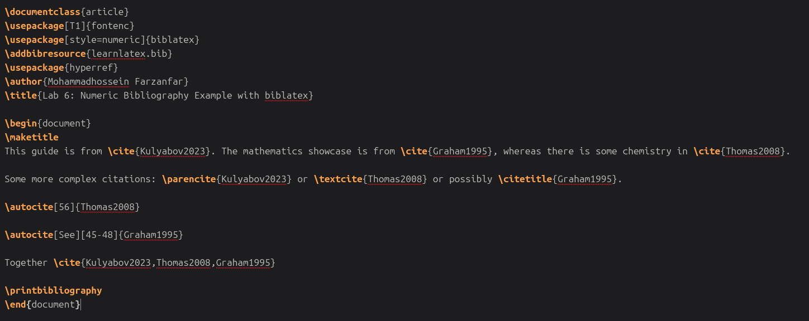
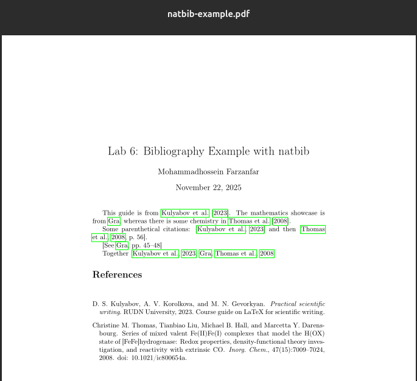
Рисунок 1: Пример с natbib alphabetic
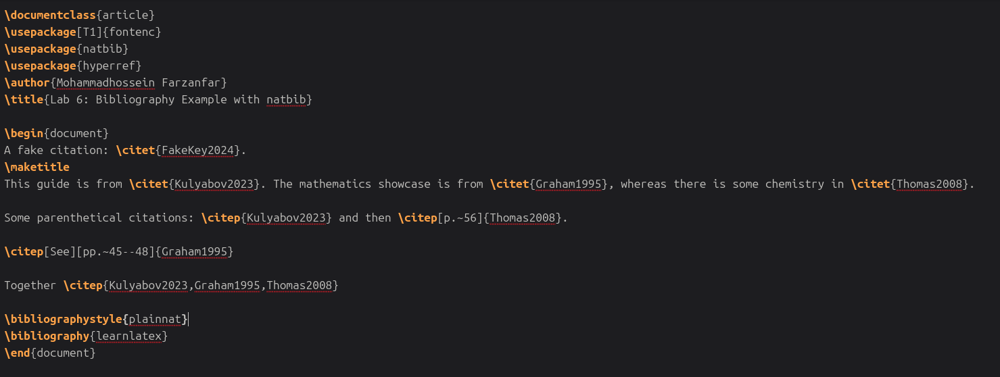
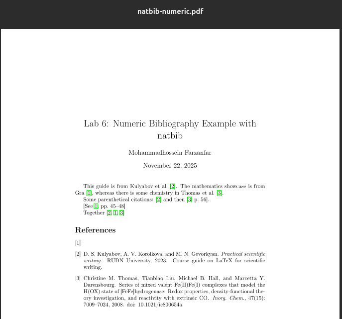
Рисунок 2: Пример с natbib numeric
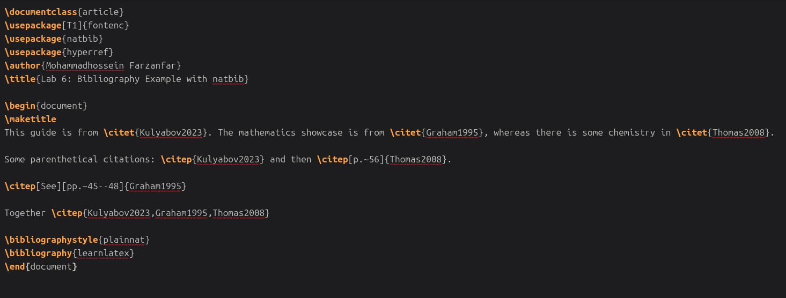
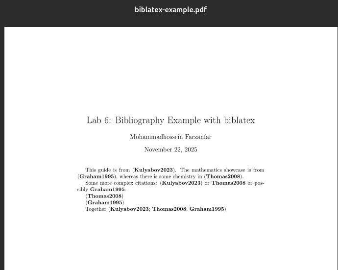
Рисунок 3: Пример с biblatex
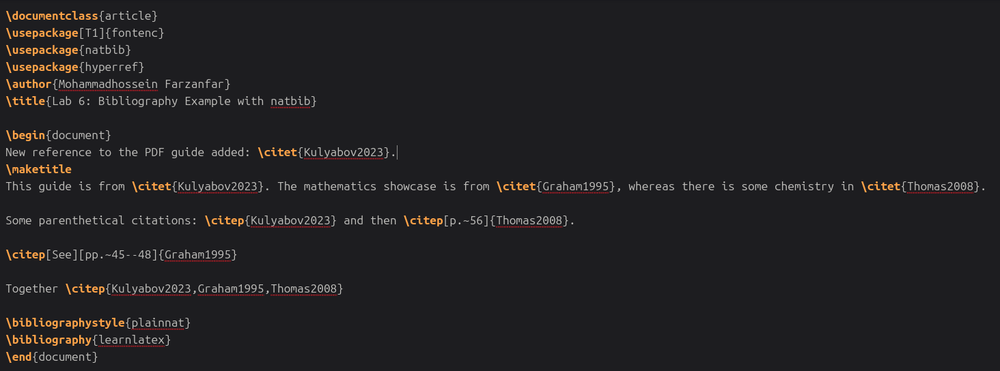
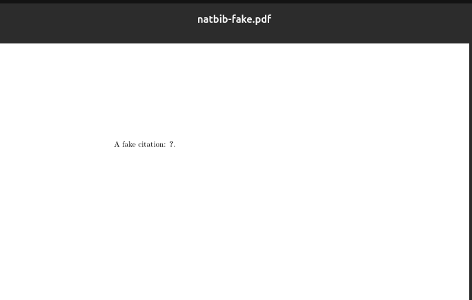
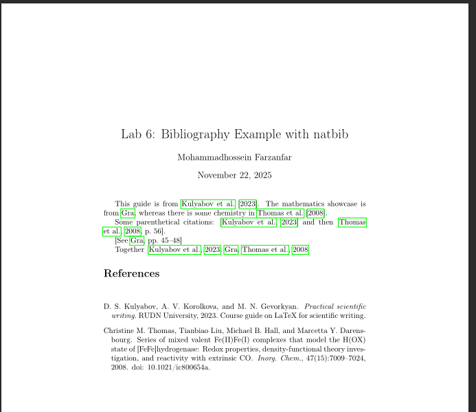
Рисунок 4: Фальшивая цитата в natbib
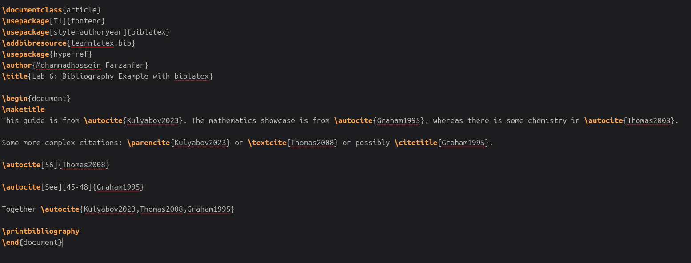
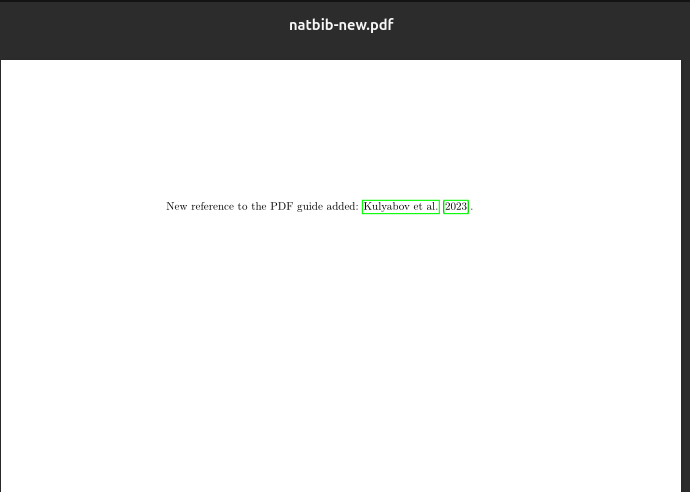
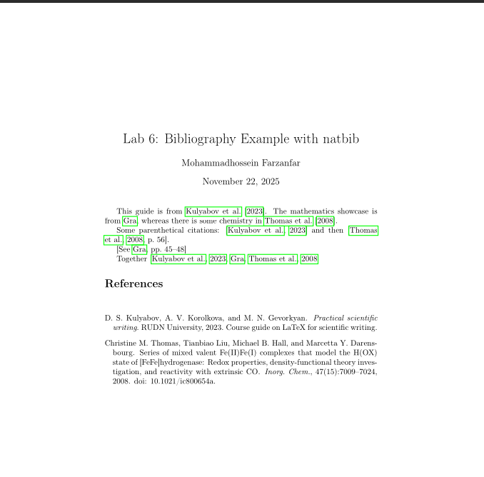
Рисунок 5: Новая ссылка в natbib
В ходе лабораторной работы №6 были освоены следующие навыки:
Освоение работы с библиографией в LaTeX является важным навыком для подготовки научных публикаций и отчетов, так как ссылки широко используются для представления источников в академической среде. Пакеты natbib и biblatex позволяют создавать профессиональные библиографии, соответствующие стандартам научных изданий.